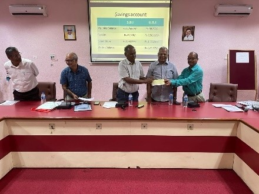
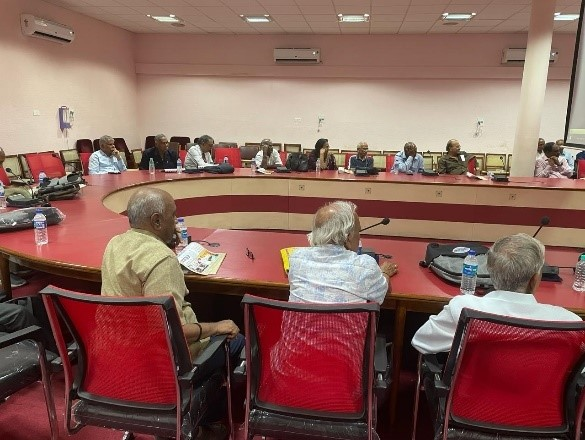

Building a Stronger Foundation for Welfare and Benevolent Service
Second Annual General Body Meeting • Conference Hall, Madras Veterinary College, Chennai
The Second Annual General Body Meeting of TTPA was held following the Alumni Meet and was attended by 47 members. Dr. N. Natarajan, President, welcomed the gathering and presided over the meeting.
The General Body reviewed the Association’s financial position and discussed strengthening its resources to support deserving veterinary students and provide assistance to pensioners during emergencies.
Dr. N. Natarajan instituted an endowment of ₹1 lakh as a corpus fund, with its interest designated for the benevolent activities of TTPA. The General Body also approved voluntary annual and five-year contribution options for members.
Members discussed publication of Association proceedings through the TTPA Newsletter and the collection of an alternate family contact number to facilitate communication during urgent situations.
Floral tributes and obituary references honoured departed members. The meeting concluded with a vote of thanks proposed by Dr. S. A. Asokan.